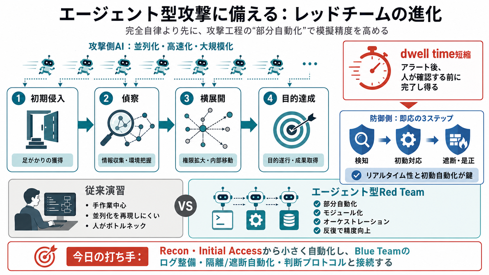

攻撃側
AIエージェントで偵察・横展開などが並列化し、人手のボトルネックが減ります（並行実行）

Agentic Security Era
レッドチームは「完全自律」より先に、現実の攻撃者が行う工程を 部分自動化 し、反復で 模擬の精度 を上げるべきだという主張です。
何が変わる？
攻撃の流れ
従来の演習だけでは、エージェントによる「工程ごとの自動化」と「意思決定の連結」を再現しにくくなります。
守りの脆点
つまりBlue Teamは、ログと判断だけでなく「時間設計（リアルタイム性）」をプロセスに組み込む必要があります。
脅威は限定されない
危険性はモデルの種類だけでなく、入手性・改変可能性・運用コストにも左右されます。
“完成品”より
Red Teamの“エージェント化”は、段階導入として現実的だとされます。
段階的エージェント化
従来演習との違い
狙いは“攻撃の派手さ”ではなく、検知→是正の時間設計を検証することです。
論点の束
“正当”と“悪性”
現実には、行動の文脈・権限・実行経路・タイミングをログで扱う必要があります。
今日の打ち手
エージェント型模擬の価値は、検知→是正の時間導線に接続できたときに最大化されます。
参考（要約元）
Google Red Team責任者の主張（記事本文要約）
入力として与えられたブログ記事テキストの範囲内で、エージェント型セキュリティ時代におけるRed Teamの役割変更（部分自動化・モジュール連結・dwell time短縮への備え）を圧縮したスライドです。
補足（本デッキの理解範囲）
定量値・実証事例は本文に限定しているため、本デッキは本文の主張中心の解釈に基づき、必要な論点（ログ・時間設計・ガバナンス）を要約形で整理しました。
※このHTMLは、ユーザー提示テキストのみを根拠に構成されています（外部文献の正確な書誌情報は入力に含まれていません）。
No references found